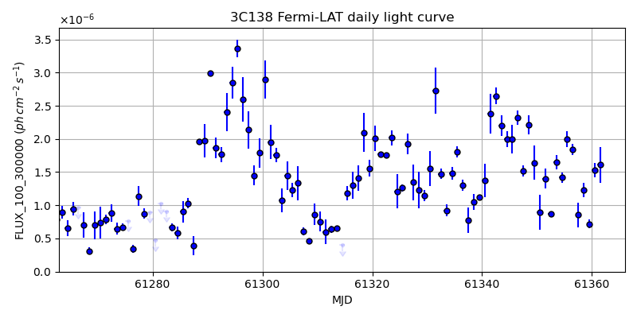
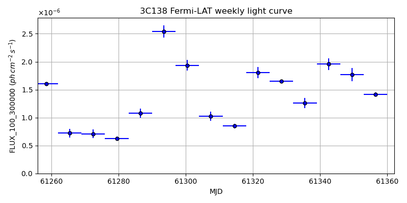
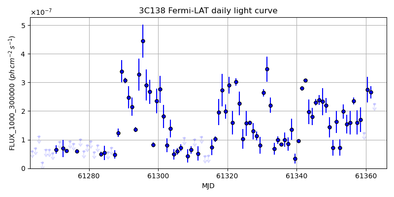
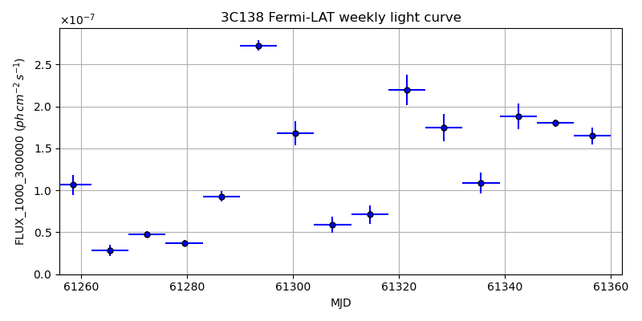

LAT Lightcurve site: https://fermi.gsfc.nasa.gov/ssc/data/access/lat/msl_lc/source/3C_138
NED: Query
Time of last update of this page: UT: 2026-11-20 16:16 (MJD: 61364.678)
| Property | Value |
|---|---|
| R.A. | 5:21:09.84 |
| Dec. | 16:38:20.4 |
| z | 0.759 |
| 3FGL SpectrumType | |
| 3FGL PL Index | -1.00 |
| 3FGL Flux_100_300000 | -1.00e+00 |
| 3FGL Flux_1000_300000 | -1.00e+00 |
| 3FGL Flux >200 GeV | -1.00e+00 |
| 3FGL Extrap. Crab >200 GeV | -1.00 |
| 3FGL Flux After EBL Absorption >200GeV | -1.00e+00 |
| 3FGL EBL Crab Fraction >200GeV | -1.00 |

| MJD | dMJD | Flux | dFlux | Frac3FGL | FracCrab>200GeV | EBLFracCrab>200GeV |
|---|---|---|---|---|---|---|
| 61359.50 | 0.50 | 7.20e-07 | 0.00e+00 | 0.00 | 0.00 | -0.00 |
| 61360.50 | 0.50 | 1.53e-06 | 0.00e+00 | 0.00 | 0.00 | -0.00 |
| 61361.50 | 0.50 | 1.61e-06 | 0.00e+00 | 0.00 | 0.00 | -0.00 |
| 61362.50 | 0.50 | 4.98e-06 | 0.00e+00 | 0.00 | 0.00 | -0.00 |
| 61363.50 | 0.50 | 6.86e-06 | 0.00e+00 | 0.00 | 0.00 | -0.00 |

| MJD | dMJD | Flux | dFlux | Frac3FGL | FracCrab>200GeV | EBLFracCrab>200GeV |
|---|---|---|---|---|---|---|
| 61328.50 | 3.50 | 1.65e-06 | 0.00e+00 | 0.00 | 0.00 | -0.00 |
| 61335.50 | 3.50 | 1.26e-06 | 0.00e+00 | 0.00 | 0.00 | -0.00 |
| 61342.50 | 3.50 | 1.96e-06 | 0.00e+00 | 0.00 | 0.00 | -0.00 |
| 61349.50 | 3.50 | 1.77e-06 | 0.00e+00 | 0.00 | 0.00 | -0.00 |
| 61356.50 | 3.50 | 1.41e-06 | 0.00e+00 | 0.00 | 0.00 | -0.00 |

| MJD | dMJD | Flux | dFlux | Frac3FGL | FracCrab>200GeV | EBLFracCrab>200GeV |
|---|---|---|---|---|---|---|
| 61359.50 | 0.50 | 1.24e-07 | 0.00e+00 | 0.00 | 0.00 | -0.00 |
| 61360.50 | 0.50 | 2.75e-07 | 0.00e+00 | 0.00 | 0.00 | -0.00 |
| 61361.50 | 0.50 | 2.66e-07 | 0.00e+00 | 0.00 | 0.00 | -0.00 |
| 61362.50 | 0.50 | 2.26e-07 | 0.00e+00 | 0.00 | 0.00 | -0.00 |
| 61363.50 | 0.50 | 1.30e-06 | 0.00e+00 | 0.00 | 0.00 | -0.00 |

| MJD | dMJD | Flux | dFlux | Frac3FGL | FracCrab>200GeV | EBLFracCrab>200GeV |
|---|---|---|---|---|---|---|
| 61328.50 | 3.50 | 1.75e-07 | 0.00e+00 | 0.00 | 0.00 | -0.00 |
| 61335.50 | 3.50 | 1.09e-07 | 0.00e+00 | 0.00 | 0.00 | -0.00 |
| 61342.50 | 3.50 | 1.88e-07 | 0.00e+00 | 0.00 | 0.00 | -0.00 |
| 61349.50 | 3.50 | 1.80e-07 | 0.00e+00 | 0.00 | 0.00 | -0.00 |
| 61356.50 | 3.50 | 1.65e-07 | 0.00e+00 | 0.00 | 0.00 | -0.00 |
--------------------------------------------------------- Using user-supplied coords: 5:21:09.84 16:38:20.4 2000 --------------------------------------------------------- FLWO UT night of: 2026-11-21 Local Sid. @ Midnight: 03:37 Sunset (-15.0) (local, UT): 18:33 01:33 Sunrise (-15.0) (local, UT): 05:47 12:47 Moonrise (local, UT): Moonset (local, UT): 03:40 10:40 Moon phase: 0.85 --------------------------------------------------------- AzTime LSID UT Obj_el Obj_az Mn_el Mn_az Sep. --------------------------------------------------------- 18:33 22:09 01:33 -6.0 66.1 47.9 117.4 70.2 19:03 22:39 02:03 0.3 70.2 53.3 125.0 70.1 19:33 23:09 02:33 6.0 74.0 58.2 134.7 69.9 20:03 23:39 03:03 12.2 77.7 62.3 146.9 69.7 20:33 00:09 03:33 18.4 81.4 65.1 162.1 69.5 21:03 00:39 04:03 24.8 85.0 66.3 179.7 69.3 21:33 01:09 04:33 31.2 88.8 65.4 197.5 69.1 22:03 01:39 05:03 37.5 92.8 62.9 213.2 69.0 22:33 02:09 05:33 43.9 97.2 59.0 225.9 68.8 23:03 02:39 06:03 50.2 102.4 54.2 235.9 68.6 23:33 03:09 06:33 56.4 108.6 48.9 243.9 68.4 00:03 03:39 07:03 62.3 116.7 43.2 250.4 68.2 00:33 04:10 07:33 67.7 128.1 37.3 255.9 68.0 01:03 04:40 08:03 72.2 144.7 31.2 260.7 67.8 01:33 05:10 08:33 74.7 168.5 25.1 265.1 67.6 02:03 05:40 09:03 74.5 195.9 19.0 269.2 67.3 02:33 06:10 09:33 71.5 218.5 12.9 273.0 67.1 03:03 06:40 10:03 66.9 234.1 6.8 276.9 66.8 03:33 07:10 10:33 61.3 244.8 1.0 280.7 66.5 04:03 07:40 11:03 55.4 252.5 -4.9 284.7 66.2 04:33 08:10 11:33 49.2 258.6 -11.1 288.8 65.9 05:03 08:40 12:03 42.9 263.5 -16.8 293.2 65.6 05:33 09:10 12:33 36.5 267.9 -22.3 298.1 65.3 05:47 09:25 12:47 33.4 269.8 -24.8 300.5 65.1 --------------------------------------------------------- Dark hours >55 deg.: 0.40 srcstart (UT): 2026-11-21 10:40 srcend (UT): 2026-11-21 11:04